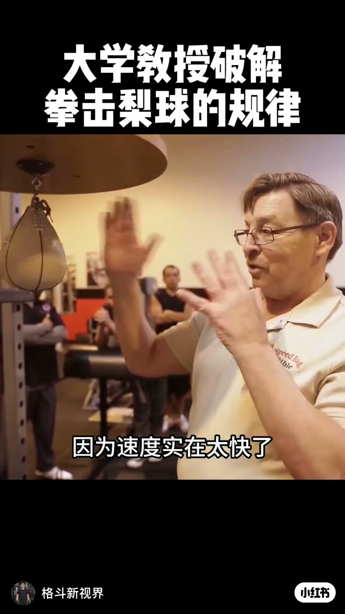
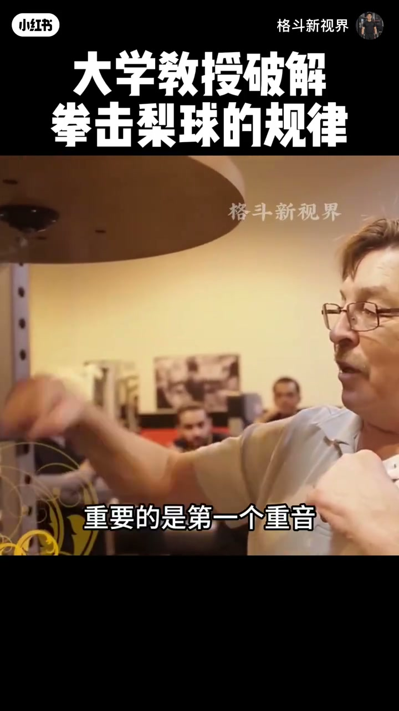
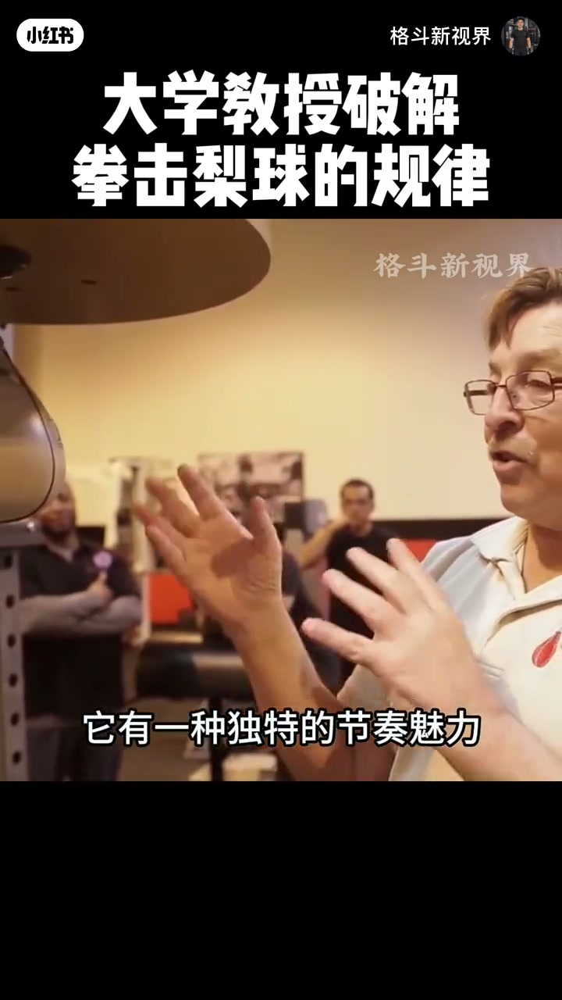
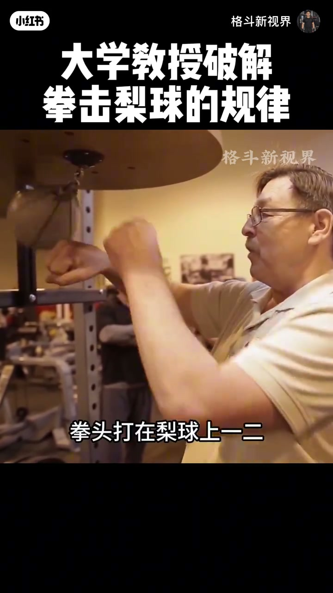
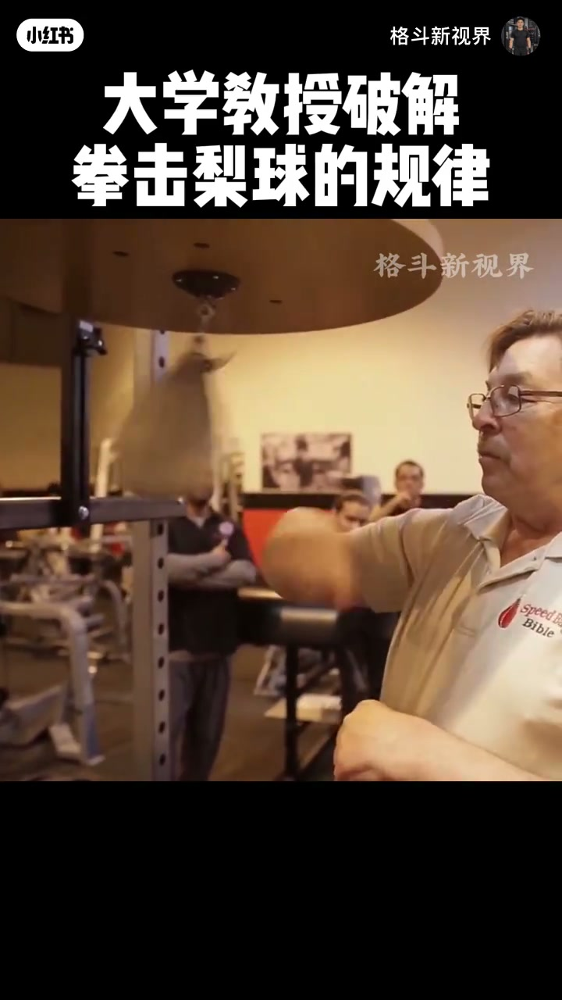

内容要点
账号「格斗新视界」约 71 秒：大学教授（衫标 Speed Bag Bible）演示拳击梨球（速度球）。口播为英文，ASR 成繁中且多误（「拍攝/包包」等），已按画面字幕与语境校正：核心是用耳朵找重音节奏，把击打打成有旋律的曲子。简介称可增强手眼协调、击打节奏与耐力。
知识结构
[00:00→00:20]
听重音
不要只用眼睛；1-2-3 里盯住发声的「1」。
[00:20→00:50]
旋律感
球包回弹自带音色；路径变化改变节奏。
[00:50→01:11]
变奏
组合击打让节奏变化，耳朵跟随新律动。
总结
梨球顺畅的关键常是听觉节奏锁定，而非死盯残影。
00:00–00:20不能只用眼睛打
片头字幕：「你不能用眼睛打它」——影像残影太多，要让耳朵告诉你发生了什么。数拍 1、2、3，重要的是那个「1」落在发出响声的重音上。

[00:03] 片头：大学教授破解拳击梨球规律——不能只靠眼睛打
Title: a professor breaks speed-bag patterns—don’t rely on eyes alone.

[00:10] 节奏口令 1-2-3：重要的是「1」落在发声重音上
Count 1-2-3; the accented ‘1’ is the sounded beat.
00:20–00:50梨球的旋律
击打时球包回弹有自己的音色与旋律；真正投入的人会觉得「这声音太酷」。变换进出路径（从后/侧面）时，你会听到「3」与节奏改变；两回合式 1-2 再回来，音色跟着变。

[00:18] 梨球有自己的旋律；投入者会为这种声音感叹
The bag has its own melody; devoted trainees marvel at the sound.
[00:28] 从后方/侧面切换，让你听见「3」与节奏变化
Change angles so you can hear the ‘3’ and the rhythm shift.

[00:36] 两回合式组合：1-2 再回来，音色随之改变
A two-pass combo: 1-2 and return—timbre changes with it.
00:50–01:11节奏变化
连续击打段落字幕出现「节奏发生了变化」——训练点是用听觉锁定新律动。简介补充：梨球是拳手常见训练，练手眼协调、赛场节奏与耐力。

[00:45] 连续击打中强调听响声而非紧盯残影
In continuous work, listen to hits instead of chasing blur.
[00:55] 节奏发生变化的段落：用耳朵锁定新律动
Segment where the rhythm changes—lock the new groove by ear.
[01:05] 收束：梨球训练手眼协调与击打节奏感（见简介）
Close: speed bag trains coordination and punching rhythm.